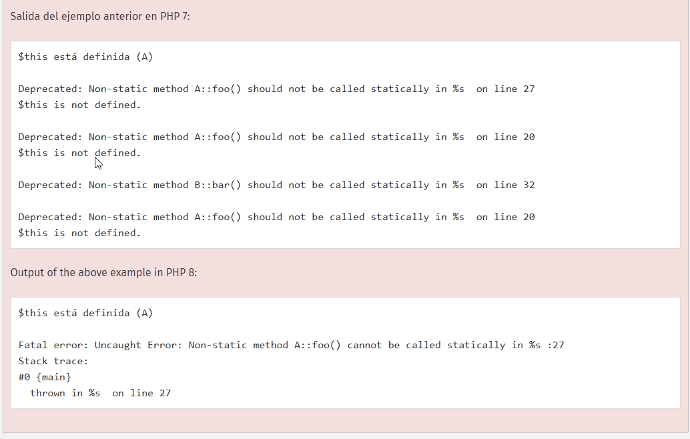

UD 3 POO en el lenguaje PHP
Desarrolla aplicaciones web identificando y aplicando mecanismos para separar el código de presentación de la lógica de negocio.
- A Se han analizado y utilizado mecanismos y frameworks que permiten realizar esta separación y sus características principales.
Introducción
En la unidad anterior las características principales del lenguaje PHP, en este tema veremos los fundamentos de la POO en el lenguaje así cómo las estructuras de datos, clases y funciones que se usan.
Programación Orientada a Objetos (POO) en PHP
La Programación Orientada a Objetos (POO) en PHP permite estructurar el código de manera modular y reutilizable, enfocándose en crear clases y objetos que representen entidades y sus comportamientos. A continuación, se presentan los conceptos y características principales de la POO, junto con ejemplos en PHP.
1. Lo básico
La definición básica de una clase comienza con la palabra reservada class, seguida de un nombre de clase, y continuando con un par de llaves que encierran las definiciones de las propiedades y métodos pertenecientes a dicha clase.
El nombre de clase puede ser cualquier etiqueta válida, siempre que no sea una palabra reservada de PHP. Un nombre válido de clase comienza con una letra o un guión bajo, seguido de una cantidad arbitraria de letras, números o guiones bajos. Como expresión regular, se expresaría de la siguiente forma: ^[a-zA-Z_\x80-\xff][a-zA-Z0-9_\x80-\xff]*$.
Una clase puede tener sus propias constantes, variables (llamadas "propiedades"), y funciones (llamados "métodos").
<?php
class ClaseSencilla
{
// Declaración de una propiedad
public $var = 'un valor predeterminado';
// Declaración de un método
public function mostrarVar() {
echo $this->var;
}
}
?>
$this
La pseudovariable $this
está disponible cuando un método es invocado dentro del contexto de un objeto. $this es una referencia al objeto invocador.
Advertencia
Llamar a un método no estático arroja estáticamente unError. Antes de PHP 8.0.0, esto generaría un aviso de desaprobación obsoleta, y $this esto no estaría definido.
Ejemplos de this
<?php
class A
{
function foo()
{
if (isset($this)) {
echo '$this está definida (';
echo get_class($this);
echo ")\n";
} else {
echo "\$this no está definida.\n";
}
}
}
class B
{
function bar()
{
A::foo();
}
}
$a = new A();
$a->foo();
A::foo();
$b = new B();
$b->bar();
B::bar();
?>

new
Para crear una instancia de una clase, se debe emplear la palabra reservada new. Un objeto se creará siempre a menos que el objeto tenga un constructor que arroje una excepción en caso de error. Las clases deberían ser definidas antes de la instanciación (y en algunos casos esto es un requerimiento).
Si se emplea un string que contenga el nombre de una clase con new, se creará una nueva instancia de esa clase. Si la clase estuviera en un espacio de nombres, se debe utilizar su nombre completo al realizar esto.
Nota :
Si no hay argumentos para pasar al constructor de la clase, se pueden omitir los paréntesis después del nombre de la clase.
Ejemplo Creación de una instancia
<?php
$instancia = new ClaseSencilla();
// Esto también se puede hacer con una variable:
$nombreClase = 'ClaseSencilla';
$instancia = new $nombreClase(); // new ClaseSencilla()
?>
Propiedades y métodos
Las propiedades y métodos de una clase viven en «espacios de nombres» diferentes, por tanto, es posible tener una propiedad y un método con el mismo nombre. Al hacer referencia tanto a una propiedad como a un método se utiliza la misma notación, y si se accederá a la propiedad o se llamará al método, solamente depende del contexto, es decir, si el empleo es el acceso a una variable o la llamada a una función.
Acceso a propiedad y método:
<?php
class Foo
{
public $bar = 'property';
public function bar() {
return 'method';
}
}
$obj = new Foo();
echo $obj->bar, PHP_EOL, $obj->bar(), PHP_EOL;
El resultado del ejemplo sería:
propiedad
método
Esto significa que llamar a una función anónima que ha sido asignada a una propiedad no es posible directamente. En su lugar, la propiedad ha de ser asignada primero a una variable, por ejemplo. A partir de PHP 7.0.0, es posible llamar a dicha propiedad directamente encerrándola entre paréntesis.
2. Clases y Objetos
- Clase: Es una plantilla para crear objetos; define propiedades y métodos.
- Objeto: Es una instancia de una clase.
Ejemplo:
<?php
class Persona {
// Propiedades
public $nombre;
public $edad;
// Método constructor
public function __construct($nombre, $edad) {
$this->nombre = $nombre;
$this->edad = $edad;
}
// Método
public function saludar() {
return "Hola, mi nombre es $this->nombre y tengo $this->edad años.";
}
}
// Crear un objeto de la clase Persona
$persona1 = new Persona("Juan", 25);
echo $persona1->saludar(); // Salida: Hola, mi nombre es Juan y tengo 25 años.
?>
Constuctores
En PHP, el constructor es un método especial dentro de una clase que se llama automáticamente al crear una nueva instancia de esa clase. El propósito principal de un constructor es inicializar las propiedades del objeto o realizar cualquier configuración necesaria al momento de la creación del objeto.
En PHP, el constructor se define usando el método especial __construct().
Ejemplo de Constructor en PHP
Supongamos que queremos crear una clase Persona que tiene dos propiedades: nombre y edad. Podemos usar un constructor para inicializar estas propiedades cuando se crea el objeto Persona.
<?php
class Persona {
// Propiedades de la clase
public $nombre;
public $edad;
// Constructor de la clase
public function __construct($nombre, $edad) {
$this->nombre = $nombre; // Asigna el valor del parámetro $nombre a la propiedad $nombre del objeto
$this->edad = $edad; // Asigna el valor del parámetro $edad a la propiedad $edad del objeto
}
// Método para mostrar información de la persona
public function mostrarInfo() {
return "Nombre: $this->nombre, Edad: $this->edad";
}
}
// Crear una instancia de la clase Persona usando el constructor
$persona1 = new Persona("Juan", 25);
echo $persona1->mostrarInfo(); // Salida: Nombre: Juan, Edad: 25
$persona2 = new Persona("María", 30);
echo $persona2->mostrarInfo(); // Salida: Nombre: María, Edad: 30
?>
Explicación del constructor
-
Definición del Constructor:
-
En la clase
Persona, el constructor se define comopublic function __construct($nombre, $edad). Los parámetros$nombrey$edadse pasan al constructor al crear un nuevo objeto de la clasePersona. -
Inicialización de Propiedades:
-
Dentro del constructor, se usa
$this->nombre = $nombrey$this->edad = $edadpara asignar los valores proporcionados a las propiedadesnombreyedaddel objeto. -
Creación de Objetos:
-
Al crear un nuevo objeto
Personacon$persona1 = new Persona("Juan", 25);, el constructor se ejecuta automáticamente, asignando"Juan"a$nombrey25a$edad. -
Mostrar Información:
-
El método
mostrarInfo()usa las propiedades inicializadas en el constructor para mostrar la información de la persona.
Ventajas del Constructor
- Inicialización automática: Al crear el objeto, se asegura de que todas las propiedades necesarias estén configuradas correctamente.
- Facilidad de uso: Al instanciar un objeto con valores iniciales, se evita el código adicional de asignación de valores fuera de la clase.
- Flexibilidad: Permite realizar configuraciones iniciales o ejecutar acciones necesarias en el momento de la creación del objeto.
Este es un patrón común en PHP y en muchos lenguajes orientados a objetos para hacer el código más limpio y organizado.
2. Encapsulamiento
El encapsulamiento es el principio que permite ocultar el estado interno de un objeto. Las propiedades se protegen usando modificadores de acceso (public, protected, private), y solo se accede a ellas mediante métodos específicos.
- public: La propiedad o método es accesible desde cualquier lugar.
- protected: La propiedad o método es accesible solo desde la clase y sus subclases.
- private: La propiedad o método es accesible solo desde la clase en la que se define.
Ejemplo:
<?php
class CuentaBancaria {
private $saldo = 0;
public function depositar($cantidad) {
if ($cantidad > 0) {
$this->saldo += $cantidad;
}
}
public function obtenerSaldo() {
return $this->saldo;
}
}
$cuenta = new CuentaBancaria();
$cuenta->depositar(1000);
echo $cuenta->obtenerSaldo(); // Salida: 1000
?>
En este ejemplo, la propiedad $saldo es privada y solo puede ser modificada o consultada a través de los métodos depositar y obtenerSaldo.
3. Herencia
La herencia permite que una clase herede propiedades y métodos de otra clase, promoviendo la reutilización de código.
- Clase padre: Es la clase de la cual se hereda.
- Clase hija: Es la clase que hereda de la clase padre.
Ejemplo:
<?php
class Animal {
public $nombre;
public function __construct($nombre) {
$this->nombre = $nombre;
}
public function hacerSonido() {
return "El animal hace un sonido";
}
}
// Clase Perro que hereda de Animal
class Perro extends Animal {
public function hacerSonido() {
return "Guau Guau";
}
}
$perro = new Perro("Max");
echo $perro->hacerSonido(); // Salida: Guau Guau
?>
La clase Perro hereda de Animal y redefine el método hacerSonido.
4. Polimorfismo
El polimorfismo permite que métodos con el mismo nombre en diferentes clases se comporten de manera distinta. Esto es útil para tratar diferentes clases de la misma manera, mientras que cada clase implementa su propio comportamiento.
Ejemplo:
<?php
class Figura {
public function calcularArea() {
return 0;
}
}
class Cuadrado extends Figura {
private $lado;
public function __construct($lado) {
$this->lado = $lado;
}
public function calcularArea() {
return $this->lado * $this->lado;
}
}
class Circulo extends Figura {
private $radio;
public function __construct($radio) {
$this->radio = $radio;
}
public function calcularArea() {
return pi() * ($this->radio ** 2);
}
}
// Polimorfismo en acción
$figuras = [new Cuadrado(4), new Circulo(3)];
foreach ($figuras as $figura) {
echo "Área: " . $figura->calcularArea() . "\n";
}
?>
Aquí, cada figura (cuadrado o círculo) implementa el método calcularArea de manera diferente.
5. Abstracción
La abstracción permite definir una clase base que no puede ser instanciada, pero sí sirve como plantilla para clases hijas. En PHP, las clases y métodos abstractos se definen con la palabra clave abstract.
Ejemplo:
<?php
abstract class Transporte {
protected $velocidad;
public function __construct($velocidad) {
$this->velocidad = $velocidad;
}
// Método abstracto
abstract public function mover();
}
class Coche extends Transporte {
public function mover() {
return "El coche se mueve a $this->velocidad km/h";
}
}
class Bicicleta extends Transporte {
public function mover() {
return "La bicicleta se mueve a $this->velocidad km/h";
}
}
$coche = new Coche(120);
echo $coche->mover(); // Salida: El coche se mueve a 120 km/h
$bicicleta = new Bicicleta(20);
echo $bicicleta->mover(); // Salida: La bicicleta se mueve a 20 km/h
?>
La clase Transporte es abstracta y no se puede instanciar, pero define un método abstracto mover que debe ser implementado por las clases hijas (Coche y Bicicleta).
6. Interfaces
Una interfaz es una plantilla que declara métodos sin implementarlos. Las clases que implementan una interfaz deben definir todos los métodos declarados en esta. Las interfaces ayudan a garantizar que las clases sigan un contrato específico.
Ejemplo:
<?php
interface Operaciones {
public function depositar($cantidad);
public function retirar($cantidad);
}
class Cuenta implements Operaciones {
private $saldo = 0;
public function depositar($cantidad) {
$this->saldo += $cantidad;
}
public function retirar($cantidad) {
if ($cantidad <= $this->saldo) {
$this->saldo -= $cantidad;
}
}
public function obtenerSaldo() {
return $this->saldo;
}
}
$cuenta = new Cuenta();
$cuenta->depositar(100);
$cuenta->retirar(30);
echo $cuenta->obtenerSaldo(); // Salida: 70
?>
Aquí, la clase Cuenta implementa la interfaz Operaciones, y por lo tanto, está obligada a definir los métodos depositar y retirar.
7. Traits
Los traits permiten reutilizar métodos entre clases sin necesidad de herencia. Un trait es como una colección de métodos que se pueden incluir en una clase.
Ejemplo:
<?php
trait Saludo {
public function decirHola() {
return "Hola!";
}
}
class Usuario {
use Saludo;
}
class Administrador {
use Saludo;
}
$usuario = new Usuario();
echo $usuario->decirHola(); // Salida: Hola!
$admin = new Administrador();
echo $admin->decirHola(); // Salida: Hola!
?>
En este ejemplo, el trait Saludo se usa en ambas clases, Usuario y Administrador, permitiendo que ambas clases accedan al método decirHola.
Resumen
La POO en PHP utiliza estos conceptos clave:
- Clases y Objetos: Plantillas y sus instancias.
- Encapsulamiento: Control de acceso a propiedades y métodos.
- Herencia: Reutilización de código en clases derivadas.
- Polimorfismo: Métodos que se comportan de manera distinta en clases relacionadas.
- Abstracción: Clases abstractas como plantillas.
- Interfaces: Plantillas de métodos para seguir contratos de código.
- Traits: Reutilización de métodos sin herencia.
Estos conceptos, aplicados adecuadamente, permiten escribir código modular, reutilizable y fácil de mantener en PHP.
Actividad Entregable
Entregable
Tienes la info en la sección "Actividad entregable"